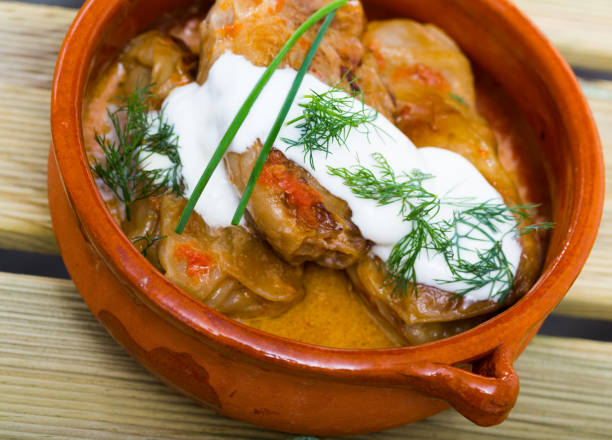

Sarmi

Description :
Sarmi is a traditional meal in Bulgaria, it is present in every Bulgarian home on Christmas Eve.
Ingredients :
- 1 (4-pound) whole cabbage head
- 1 bunch green onions, finely chopped
- 1 medium carrot, finely chopped
- 1 tablespoon tomato sauce or puree
- 1/2 cup raw rice
- 2 tablespoons olive oil, divided
- 1 cup broth, or water
- 1 1/2 pounds ground veal
- 1/2 pound ground pork
- 1/2 teaspoon freshly ground black pepper
- 1 tablespoon finely chopped parsley
- 1 teaspoon finely chopped mint
- 1 jar tomato juice
- 1 cup plain Bulgarian yogurt
- 1 tablespoon paprika, hot or sweet, or to taste
- Salt, to taste
How to make it:
- Remove core from cabbage.
- Place whole head in a large pot filled with boiling salted water. Cover and cook 3 minutes, or until softened enough to pull off individual leaves.
- Remove cabbage from water, and when cool enough to handle, pull off 24 leaves.
- When leaves are cool enough to handle, use a paring knife to cut away the thick center stem from each leaf, without cutting all the way through.
- Chop the remaining cabbage and place it in the bottom of a large oiled casserole dish or Dutch oven.
- In a medium skillet, saute chopped onion, carrots and rice in 1 tablespoon of the oil until rice grains are completely coated with oil.
- Add 1 cup broth or water and stir until water has been absorbed. Let cool and transfer to a large bowl.
- Add veal, lamb, salt, pepper, parsley and mint and mix until well combined, but don't over mix or the meat will become tough.
- Place about 1/2 cup of meat on each cabbage leaf. Roll away from you to encase the meat.
- Flip the right side of the leaf to the middle, then flip the left side. You will have something that looks like an envelope.
- Once again, roll away from you to create a neat little roll.
- Pre heat oven to 350 F. Place the cabbage rolls on top of the chopped cabbage in the casserole dish or Dutch oven, seasoning each layer with salt and pepper. Pour enough tomato juice over rolls so it comes 2/3 up the side of the Dutch oven or casserole. Bring to a boil.
- Turn off heat, place a weighted ovenproof dish on the cabbage rolls, cover and place in oven. Bake for 1 hour or until cabbage is tender and meat is cooked.
- Make a sauce in a small bowl by combining yogurt, paprika, and a little olive oil, mixing until smooth. Transfer stuffed cabbages to a serving plate and cover with sauce.